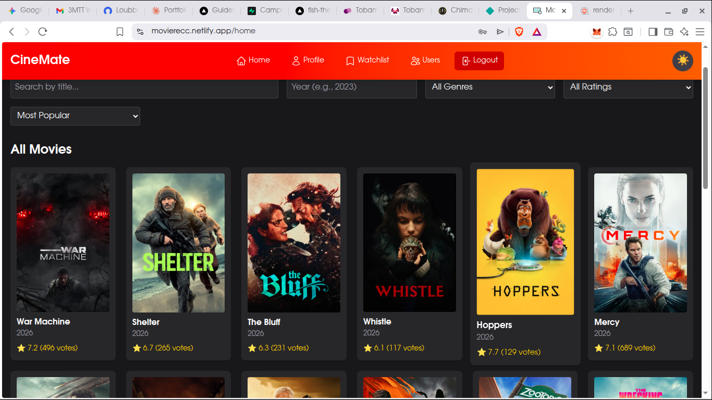
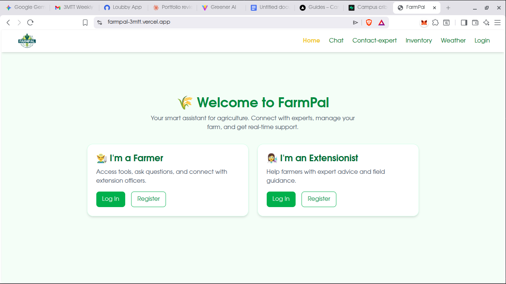
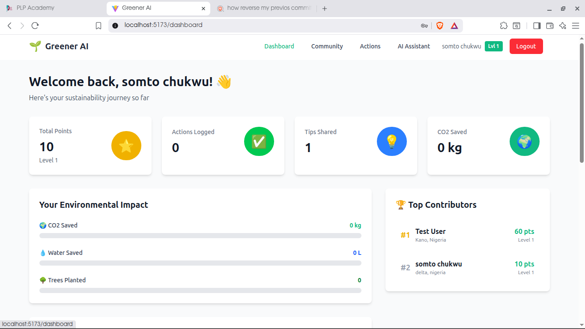
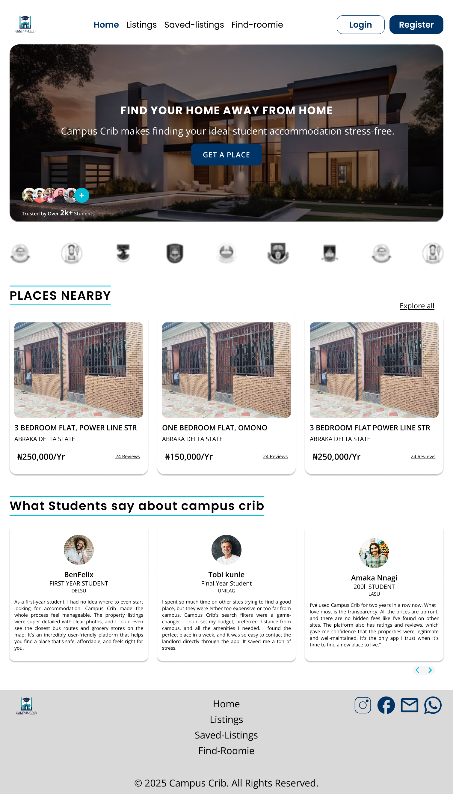
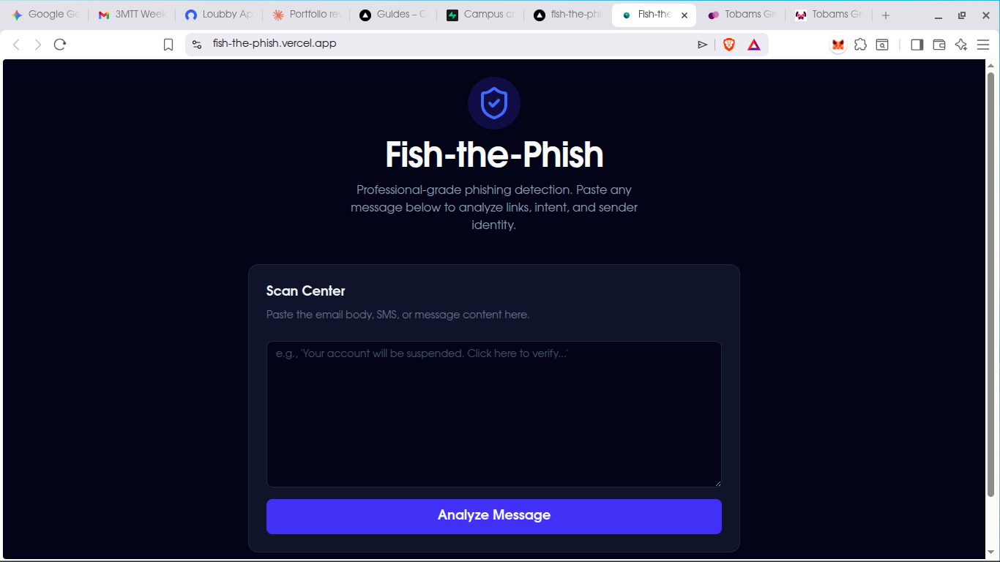

Based in Nigeria · Open to opportunities
AI developer — building intelligent systems,
From concept to deployment.
👋 Hi, I'm Chima Ben. I'm a Fullstack Developer with a growing focus on backend systems and AI integration — the kind of work that powers products from the inside out. I don't just build features; I build the infrastructure that makes features reliable.
My journey started in 2023 through FreeCodeCamp, driven entirely by curiosity. I was studying Animal Science at the time — a degree that quietly taught me precision, data analysis, and systems thinking. Those same instincts now shape how I design APIs and think about architecture.
My edge? I understand both sides of the stack. A background in UX design means I don't just think about what the server does — I think about what the user feels when things go wrong, and I build systems that handle that gracefully.
I'm looking for a team building something meaningful, where backend depth and user empathy belong in the same room.
Download CVWhere it started. Built projects from scratch to prove the fundamentals — HTML, CSS, responsive layouts. The beginning of a deliberate shift.
Pushed deeper into JavaScript — algorithmic thinking, problem-solving under constraints. This is where coding stopped feeling like typing and started feeling like thinking.
Graduated with grounding in data analysis, scientific research, and systems thinking. The discipline here — not the livestock — is what I carry into every technical problem.
Designed and delivered JS curriculum for 10+ students. Teaching forced me to understand concepts at a deeper level — if you can't explain it simply, you don't know it well enough.
Intensive program: React, Node.js, Express, PostgreSQL. Built full-stack applications under real deadlines — the first time I felt genuine production pressure.
Immersive UX training: user research, wireframing, Figma, usability testing. Understanding design made me a significantly better backend developer — I now build APIs with the consumer in mind.
Extended into Python, MongoDB, and startup development. Pitched a product concept alongside technical coursework — the first time I connected engineering with business viability.
First professional role. Collaborated with clients, conducted usability tests, and iterated on live products. Confirmed that the best systems are built by people who understand both the user and the code.

Full-Stack · PWAFilm fans had no reliable way to track recommendations — just DMs going nowhere. CineMate brings watchlists, favourites, and personalised suggestions into one persistent place.

Full-Stack · AgriTechNigerian smallholder farmers lack access to affordable expert advice. FarmPal connects them to extension workers and adds an AI-powered inventory layer for smarter daily operations.

AI · GamificationSustainability advice is abundant — accountability is not. Greener AI gamifies eco-friendly choices so users build real habits, not good intentions that fade by Tuesday.

UX Design · Case StudyStudents searching for off-campus housing in Nigeria face unverified listings and no safety net. This UX case study designs the trust layer the market is missing.

AI · CybersecurityPhishing works because most people can't identify it under pressure. Paste any suspicious message and get an instant AI breakdown of links, sender intent, and red flags — before you click.
I'm always open to connecting with developers, potential collaborators, or anyone building something worth caring about. Whether you have a project in mind or just want to say hello — reach out.
Send a Message